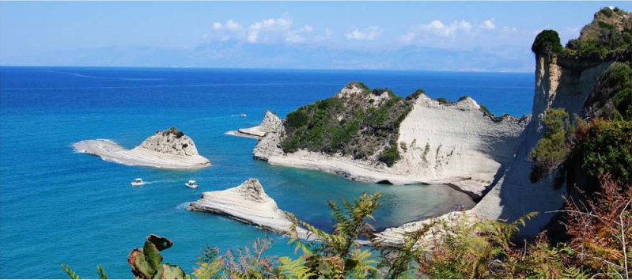

California cliffs are one of a kind in the United States where no cliffs are as magnificent and beautiful as them. And California is one of the few states that have cliffs located near beaches and oceans. The cliffs are located within a few hundred feet from the ocean, which provides a mesmerizing view of the ocean waves, birds flying above the cliffs, and colorful sunsets behind the cliffs.
California's cliffs are very interesting to visit. They have lots of tourist attractions and beautiful scenic views. People enjoy hiking, camping, biking, and many other outdoor activities around these cliffs.